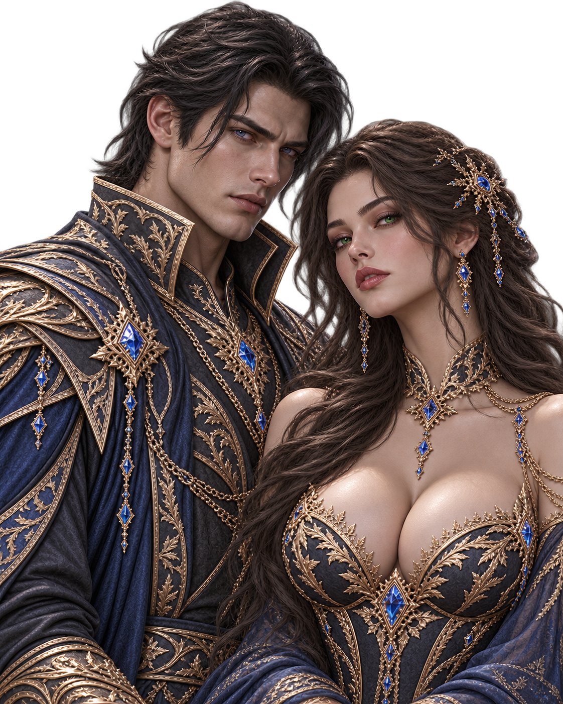
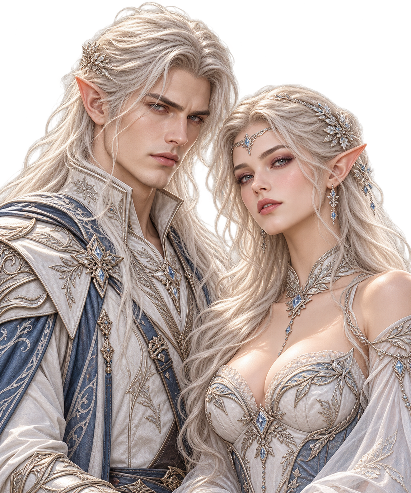
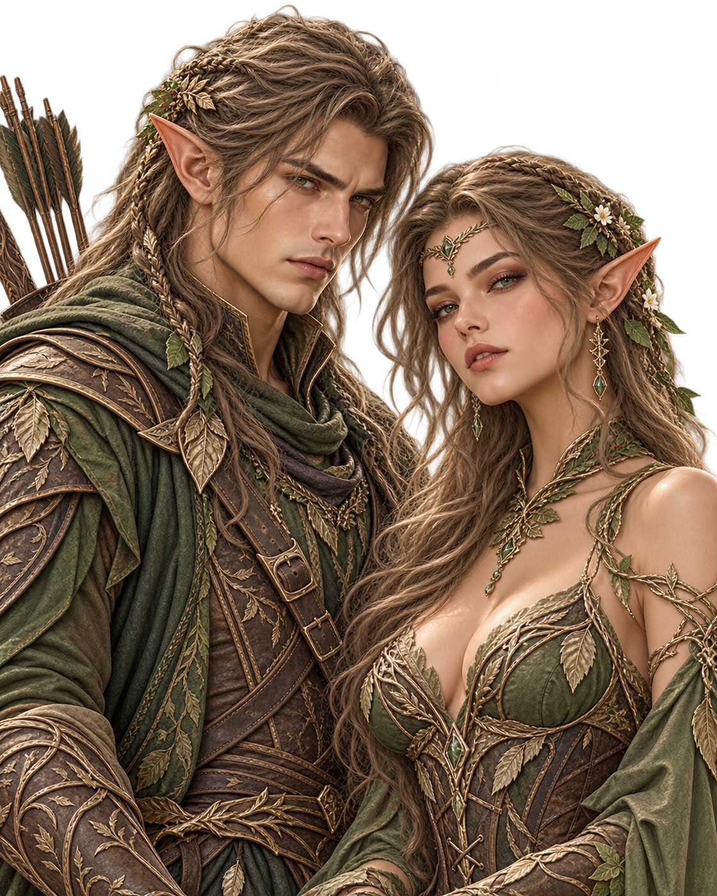
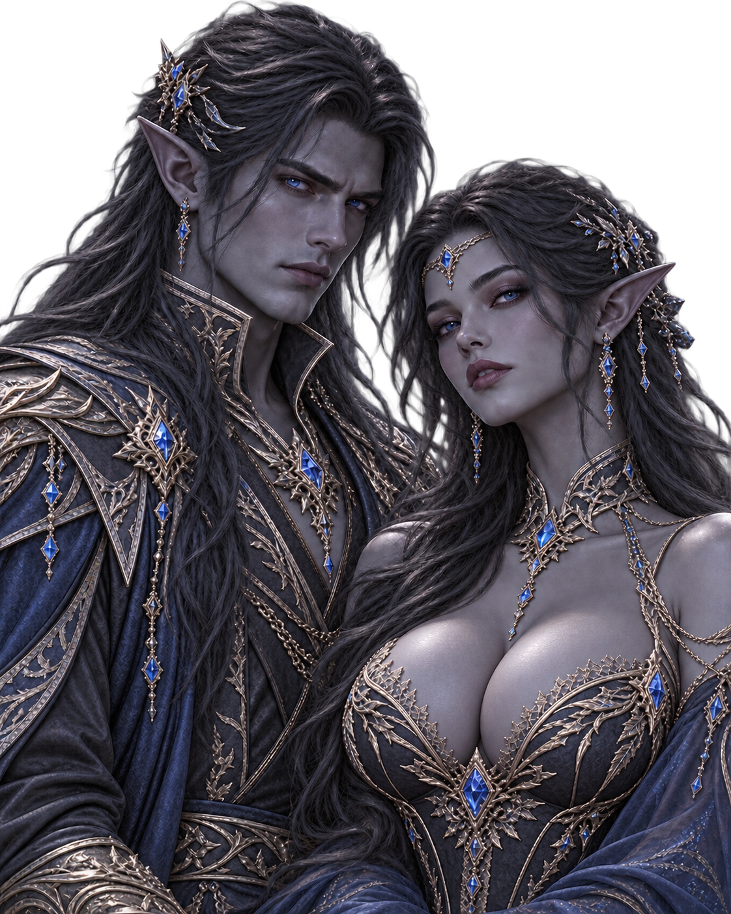
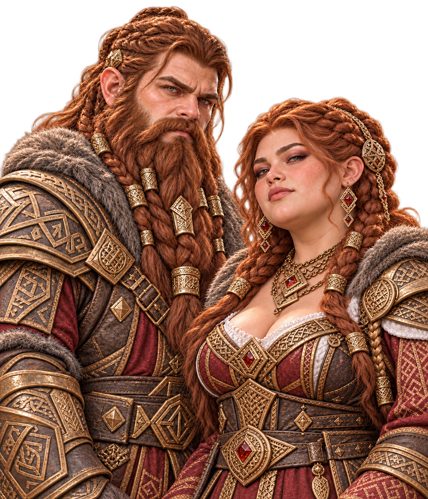
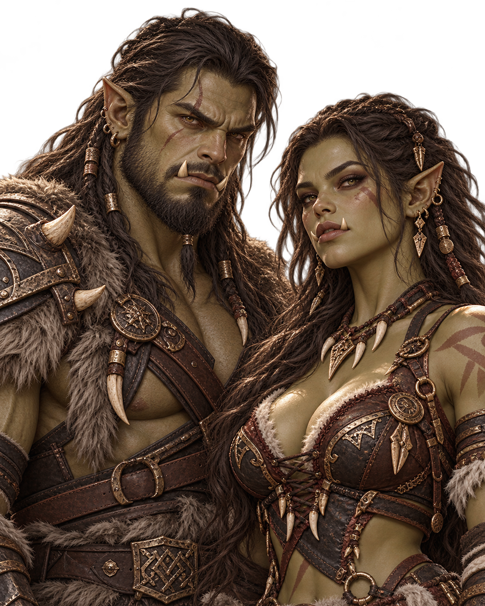
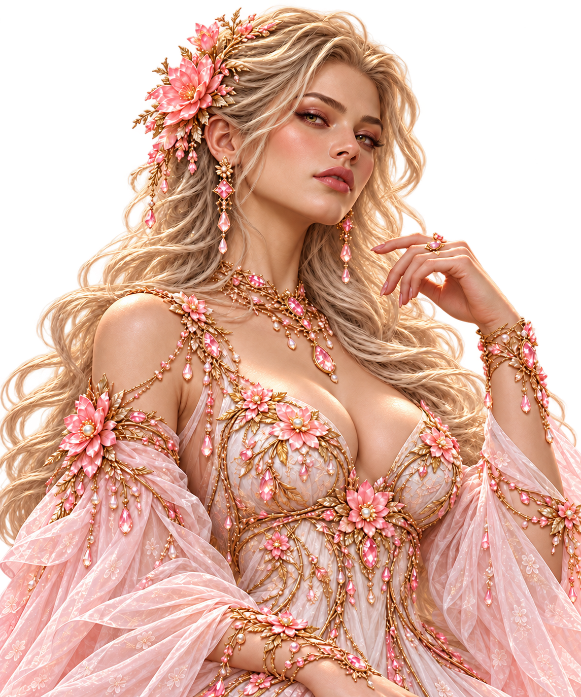
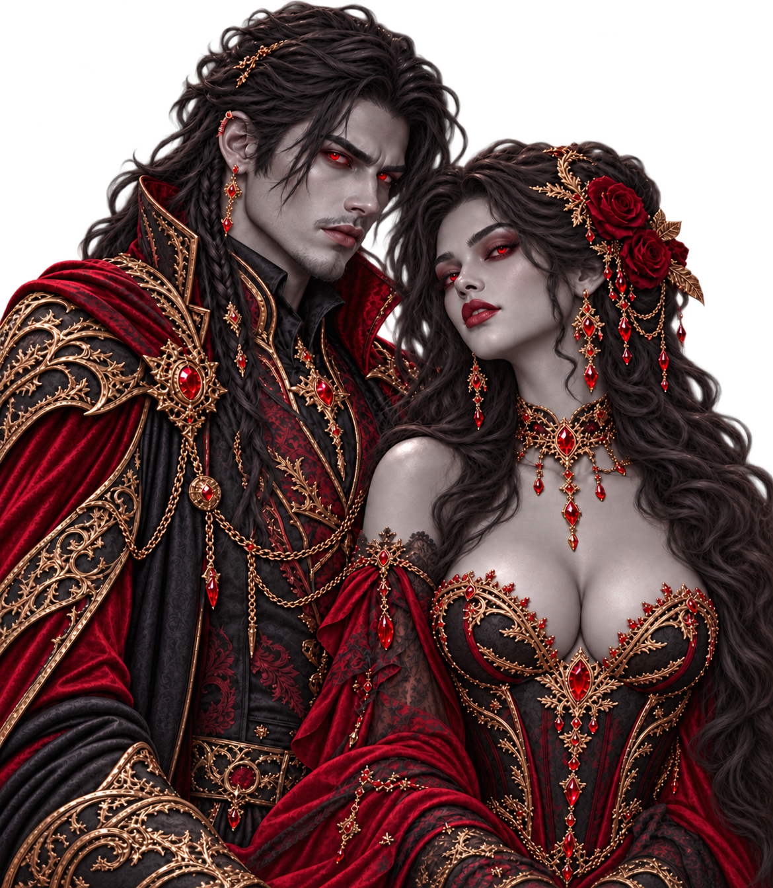

Elfes Blancs
Eau
Six grandes races sont traditionnellement reconnues sur Hignar : Humains, Elfes, Orcs, Nains, Vampires et Sylphides. Derrière cette classification apparemment simple se cachent pourtant des lignées distinctes, des héritages magiques complexes et une histoire commune parfois profondément conflictuelle.
Le mot race désigne sur Hignar une classification fondée principalement sur la morphologie et l'appartenance biologique. Les Elfes sont toutefois divisés en trois grandes lignées suffisamment distinctes pour posséder chacune leurs propres traditions et affinités anciennes : les Elfes Blancs, les Elfes des Bois et les Elfes Noirs.
Les Vampires compliquent encore cette définition : ils sont reconnus comme une race à part entière, tout en étant issus d'une mutation des Humains. La notion de race n'est donc pas seulement biologique. Elle est également façonnée par l'histoire, les sociétés et la manière dont les peuples ont appris à se reconnaître mutuellement.

Les Humains occupent une place singulière parmi les peuples d'Hignar. Leur ancienne magie raciale est associée au vent et à la foudre, mais leur particularité la plus remarquable est biologique : ils sont compatibles reproductivement avec toutes les autres races.
Lors d'une union mixte, l'enfant appartient entièrement à l'une des deux races et non à une forme intermédiaire. La race de la mère semble prédominer plus souvent, sans que cela constitue une règle absolue. La magie, elle, peut hériter des deux lignées, rester silencieuse durant plusieurs générations puis réapparaître chez un descendant.
Cette compatibilité exceptionnelle fut autrefois exploitée par des Elfes qui séquestrèrent des Humains et menèrent sur eux des expériences de reproduction, cherchant à créer des lignées cumulant plusieurs affinités magiques. Certains allaient jusqu'à refuser aux Humains le statut de peuple à part entière. Ces pratiques contribuèrent aux premières grandes guerres raciales et à la lutte des Humains pour leur reconnaissance.

Les Elfes Blancs constituent l'une des trois grandes lignées elfiques. Leur affinité originelle est l'eau, et leur physiologie leur confère une résistance au froid supérieure à celle de la plupart des autres races.
Ils possèdent une tradition artisanale importante et excellent notamment dans certaines formes de forge. Argent, métal sidéral, feu et glace tiennent une place particulière dans leurs créations, tandis que l'or est parfois regardé avec méfiance, trop associé à leurs yeux à la cupidité humaine.
De toutes les lignées elfiques, les Elfes Blancs sont probablement ceux chez qui le sentiment de supériorité raciale s'est historiquement exprimé avec le plus de force. Les préjugés envers les autres peuples ont profondément marqué une partie de leur histoire et de leur culture, même s'ils ne définissent évidemment pas chaque individu.

Associés depuis l'Antiquité à la terre, les Elfes des Bois possèdent une aptitude toute particulière à la chasse et au maniement de l'arc. Leur rapport à la nature est profond, mais il ne faut pas les imaginer condamnés à une existence exclusivement sylvestre.
Ils affectionnent les forêts autant que les habitations plus classiques. Pour eux, vivre au contact des arbres et habiter une cité ou une demeure construite ne constituent pas deux modes de vie incompatibles.
Leur histoire est également marquée par une inimitié ancienne avec les Elfes Noirs. Comme beaucoup de rivalités raciales d'Hignar, cette opposition s'est transmise bien au-delà des événements qui l'ont fait naître.

Les Elfes Noirs se reconnaissent notamment à leur peau gris bleu sombre et à leur longue espérance de vie. Leur élément racial originel est le feu, même si les brassages de lignées ont depuis longtemps permis à certains d'entre eux de développer d'autres affinités.
Leur culture possède ses propres traditions, ses expressions artistiques et une identité particulièrement affirmée. Les tensions anciennes avec les Elfes des Bois ont laissé des traces durables dans les relations entre les deux peuples.
Les femmes Elfes Noires jouissent d'une réputation qui dépasse largement leur propre peuple : elles sont généralement considérées comme les plus belles femmes d'Hignar, toutes races confondues. Cette réputation est devenue un trait culturel presque indissociable de l'image que les autres peuples se font d'elles.

Les Nains sont les artisans les plus réputés d'Hignar. La Nation de Fer, qu'ils dominent, est célèbre pour ses maîtres forgerons et pour des créations si rares et si complexes qu'elles sont convoitées jusque dans les cours royales.
Leur savoir-faire ne se limite pas aux armes. Orfèvrerie, travail des métaux, mécanismes et technologies complexes font partie de leurs domaines de prédilection. Le mystérieux réseau des Centres Sécurisés de Stockage Individuel est ainsi administré par eux, et son fonctionnement demeure jalousement protégé.
Les Nains ont en revanche très peu de prédispositions naturelles pour la magie et s'intéressent rarement à son étude académique. Leur culture valorise davantage le geste, la matière, l'invention et un solide goût pour les traditions collectives.

Les Orcs comptent parmi les peuples les plus physiquement résistants d'Hignar. Leur carrure et leur endurance impressionnent jusque dans des situations où d'autres races peinent simplement à rester debout.
Cette puissance physique ne les tient nullement à l'écart de la magie : les Orcs peuvent l'étudier, la pratiquer et être représentés parmi les grands maîtres. Ils possèdent leurs propres traditions, leurs instruments et leurs expressions culturelles, qui se mêlent parfois à celles d'autres peuples.
Leur réputation de force brute ne résume donc qu'une partie de leur identité. Derrière l'image du combattant se trouve un peuple pleinement intégré aux échanges, aux institutions et aux cultures d'Hignar.

Les Sylphides forment un peuple exclusivement féminin. Leur société accorde une place exceptionnelle à l'esthétique, à la beauté et aux métiers de création.
Vêtements, parfums et bijoux comptent parmi leurs spécialités les plus réputées. Leur maîtrise de la mode et des créations magiques liées à l'apparence est recherchée dans tout Hignar, même si les Nains conservent généralement l'avantage lorsqu'il s'agit de joaillerie pure.
Les Sylphides pourraient étudier la magie académique, mais elles s'y intéressent peu. Leur rapport au merveilleux passe davantage par la création, la matière, les fragrances et la recherche du beau que par les disciplines enseignées dans les grandes écoles de magie.

Les Vampires sont officiellement comptés parmi les grandes races d'Hignar, mais leur origine est particulière : ils proviennent d'une mutation des Humains. Avec le temps, ils ont néanmoins acquis une identité sociale et culturelle suffisamment forte pour être considérés comme un peuple à part entière.
Leur teint gris, leurs yeux rouges et leur jeunesse parfois trompeuse rendent leur âge difficile à estimer. Un détail fascine souvent ceux qui les observent pour la première fois : les Vampires ne clignent pas des yeux, donnant à leur regard une fixité profondément dérangeante.
Ils sont également liés à l'existence des goules : certaines attaques commises durant leur régénération peuvent transformer un être humain en créature coincée entre la vie et la mort. Cette pratique n'est toutefois pas valorisée par l'ensemble du peuple vampire et est même abhorrée par ses membres les plus nobles.
Eau
Terre
Feu
Vent & foudre
À une époque ancienne, les peuples vivaient beaucoup plus séparément et leurs affinités élémentaires suivaient davantage leur race d'origine. Les unions mixtes ont progressivement brouillé ces frontières.
Un enfant né de deux lignées différentes n'est pas un hybride physique : il appartient à une seule race. Sa magie peut en revanche combiner des héritages provenant de plusieurs ancêtres. Une affinité peut même rester latente pendant plusieurs générations avant de réapparaître.
Les Humains sont la seule race connue comme compatible avec toutes les autres. À l'inverse, certaines unions entre races différentes sont stériles : un Elfe Blanc et un Elfe Noir, par exemple, ne peuvent normalement pas avoir d'enfant ensemble.
L'histoire des races d'Hignar n'est pas une succession paisible de cultures vivant côte à côte. Les anciennes expériences menées sur les Humains ont montré jusqu'où pouvait aller une société lorsqu'elle refusait à un autre peuple le même statut qu'à elle-même.
Les Humains durent se battre pour être reconnus comme une race à part entière. Leur passé reste aujourd'hui un précédent majeur chaque fois que les habitants d'Hignar débattent de la conscience, de la dignité ou des droits à accorder à des êtres différents d'eux.
Sur Hignar, la frontière entre peuple et créature n'a donc jamais été aussi immuable qu'elle le paraît.
Retrouvez les nations, les technologies, les institutions, les lieux et les créatures qui donnent à ce monde son identité.
Retour à l'univers